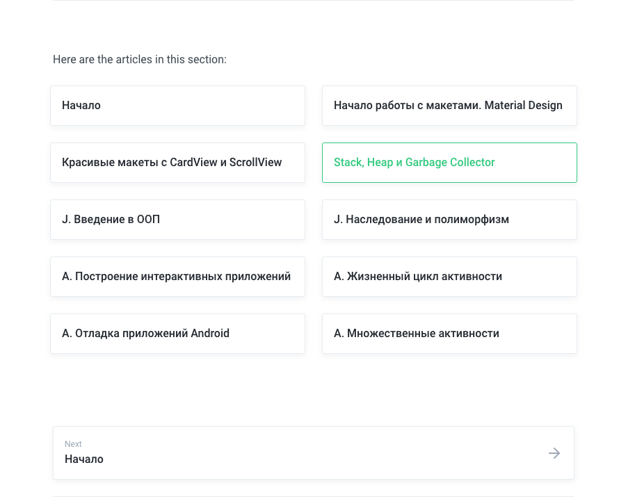

IT ШКОЛА Samsung - Статические члены класса
Где же все эти UI объекты?
Как мы до них доберемся?
Android заботится о выделении памяти для наших приложений.
Кроме того, он хранит различные типы данных в разных местах.
Ну зачем нам вообще нужна такая система?
Семь фактов о стеке и куче.
1. Мы сами не удаляем объекты, виртуальная машина отправляет сборщик мусора, когда считает это уместным
2. Локальные переменные и методы находятся в стеке
3. Переменные экземпляра класса находятся в куче, со своими объектами. Но ссылка на объект (его адрес) является локальной переменной в стеке
4. Мы контролируем то, что попадает в стек. Мы можем использовать объекты в куче, но только путем ссылки на них
5. Куча поддерживается в чистоте и актуальном состоянии сборщиком мусора
6. Объект собирается сборщиком, когда больше нет ссылок на него
7. Если мы попытаемся сослаться на объект, который не существует,мы получим исключение NullPointerException и приложение рухнет
Так как мы доберемся до объектов?
myButton = (Button) findViewById(R.id.myButton);
myButton.setText
myButton.setHeight
myButton.setOnCLickListener
myButton.setVisibility
Вообще класс Button имеет около 50 методов!
Использование Button и TextView из нашего макета
Приложение Java Meet UI
https://haschish.gitbook.io/it-cube-java-android
